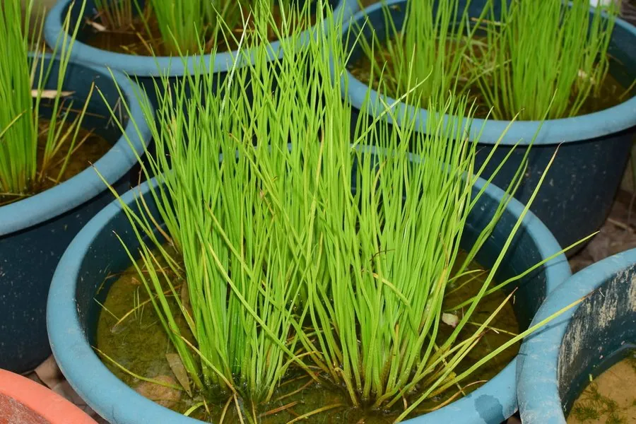

蕨类与裸子植物 · 植物界
中华水韭 Isoetes sinensis

中华水韭是水生蕨类，形似一丛小草，生于浅水湿地，是中国特有的珍稀濒危植物，属国家一级保护野生植物。
- 分类
- 门蕨类植物门纲水韭纲目水韭目科水韭科属水韭属
- 栖息环境
- 清澈浅水的池塘、沼泽与湿地，水质贫营养
- 地理分布
- 中国浙江、江苏、安徽、江西等地的少数湿地
- 保护级别
- IUCN 暂无评估；中国国家一级重点保护野生植物
物种志
中华水韭是水韭科水生蕨类，植株高 15–30 cm，外形像一丛丛细长的草。茎短粗、块状，二至三裂，下部生须根。叶细长、线形，丛生于茎顶，基部膨大、内有孢子囊，分为大孢子囊和小孢子囊；叶片中有 4 条纵向气道，能帮助它在水中呼吸。全株沉水或挺水生长。
中华水韭只生长在浅水池塘、沼泽与湿地中，喜清澈、贫营养的水质，对环境变化十分敏感。它靠孢子繁殖，孢子在水边泥中萌发，生活史特殊，是研究蕨类植物演化的重要材料。由于湿地围垦、水体污染与生境破坏，中华水韭的野生种群急剧减少，分布点十分有限，是中国特有的珍稀濒危水生蕨类，被列为国家一级重点保护野生植物。保护其湿地生境是当务之急。
形态与习性
- 株高15–30 cm
- 叶细长线形，基部膨大有孢子囊
- 茎短粗块状，二至三裂
- 习性水生，沉水或挺水生长
- 保护国家一级重点保护野生植物
趣味知识
- 中华水韭外形像一丛草，其实是水生蕨类，不是禾草。
- 它的叶片基部膨大，里面藏着大孢子囊和小孢子囊。
- 中华水韭是中国特有珍稀植物，已被列为国家一级保护野生植物。